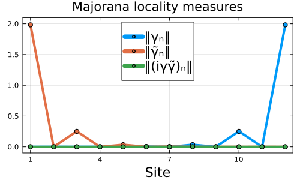

Interacting Kitaev Chain Tutorial
In this example, we study the interacting Kitaev chain. We show how the Hamiltonian can be constructed symbolically or by using matrix representations of the fermionic operators, and how to restrict the Hilbert space to a subspace of a given parity. We solve for the ground states and characterize the locality of the many-body Majoranas.
We start by importing the necessary packages.
using FermionicHilbertSpacesusing Arpack, LinearAlgebra, PlotsWe define symbolic fermions using the @fermions macro, and a Hilbert space with N sites and parity conservation.
@fermions fN = 12H = hilbert_space(f, 1:N, ParityConservation())4096-dimensional SectorHilbertSpace
Parent: f[1, 2, ..., 11, 12]
Sectors: [-1 (2048-dim), 1 (2048-dim)]Let's define the interacting Kitaev chain Hamiltonian. It is a function of the fermions f and parameters N, μ, t, Δ, and U, representing the number of sites, chemical potential, hopping amplitude, pairing amplitude, and interaction strength, respectively. Note the use of the Hermitian conjugate hc, which simplifies the expression for the Hamiltonian.
kitaev_chain(f, N, μ, t, Δ, U) = sum(t * f[i]' * f[i+1] + hc for i in 1:(N-1)) + sum(Δ * f[i] * f[i+1] + hc for i in 1:(N-1)) + sum(U * f[i]' * f[i] * f[i+1]' * f[i+1] for i in 1:(N-1)) + sum(μ[i] * f[i]' * f[i] for i in 1:N)kitaev_chain (generic function with 1 method)Define parameters close to the sweet spot with perfectly localized Majoranas, and get the symbolic Hamiltonian.
U = 4.0t = 1.0δΔ = 0.4Δ = t + U / 2 - δΔ # slightly detuned from the sweet spotμ = fill(-U / 2, N) # edge chemical potentialμ[2:(N-1)] .= -U # bulk chemical potentialhsym = kitaev_chain(f, N, μ, t, Δ, U)Sum with 67 terms:
-2.6*f†[9]*f†[10]-4.0*f†[9]*f†[10]*f[9]*f[10]-2.6*f†[4]*f†[5] + ...To convert the symbolic Hamiltonian to a matrix representation, use the representation function.
representation(hsym, H)4096×4096 SparseArrays.SparseMatrixCSC{Float64, Int64} with 49151 stored entries:
⎡⢿⣷⣷⡈⠳⠄⠀⠘⢦⡀⠀⠀⠀⠀⠀⠳⣄⠀⠀⠀⠀⠀⠀⠀⠀⠀⠀⠀⠀⠀⠀⠀⠀⠀⠀⠀⠀⠀⠀⠀⎤
⎢⡙⠻⣿⣿⣴⢦⡀⠀⠀⠙⠂⠀⠀⠀⠀⠀⠈⠳⣄⠀⠀⠀⠀⠀⠀⠀⠀⠀⠀⠀⠀⠀⠀⠀⠀⠀⠀⠀⠀⠀⎥
⎢⠙⠆⠰⣟⠿⣧⣝⣦⠠⣄⣄⠀⠀⠀⠀⠀⠀⠀⠈⠳⠀⠀⠀⠀⠀⠀⠀⠀⠀⠀⠀⠀⠀⠀⠀⠀⠀⠀⠀⠀⎥
⎢⣀⠀⠀⠈⠳⣽⣿⣿⣦⢈⠉⠳⣄⠀⠀⠀⠀⠀⠀⠀⠀⠀⠀⠀⠀⠀⠀⠀⠀⠀⠀⠀⠀⠀⠀⠀⠀⠀⠀⠀⎥
⎢⠈⠳⣄⠀⠀⢦⡈⢛⣿⣿⡅⠀⠈⠳⣄⠀⠀⠀⠀⠀⠀⠀⠀⠀⠀⠀⠀⠀⠀⠀⠀⠀⠀⠀⠀⠀⠀⠀⠀⠀⎥
⎢⠀⠀⠈⠀⠀⠙⢧⡀⠁⠉⣿⣿⣷⡈⠻⠅⠀⠘⢦⡀⠀⠀⠀⠀⠀⠀⠀⠀⠀⠀⠀⠀⠀⠀⠀⠀⠀⠀⠀⠀⎥
⎢⠀⠀⠀⠀⠀⠀⠀⠙⢦⡀⡙⠻⣿⣿⣶⢦⡀⠀⠀⠙⠀⠀⠀⠀⠀⠀⠀⠀⠀⠀⠀⠀⠀⠀⠀⠀⠀⠀⠀⠀⎥
⎢⢤⡀⠀⠀⠀⠀⠀⠀⠀⠙⠟⠆⠸⣟⠿⣧⣽⣦⠠⣄⠀⠀⠀⠀⠀⠀⠀⠀⠀⠀⠀⠀⠀⠀⠀⠀⠀⠀⠀⠀⎥
⎢⠀⠙⢦⡀⠀⠀⠀⠀⠀⠀⣀⠀⠀⠈⠳⣿⣿⣿⣦⣈⠀⠀⠀⠀⠀⠀⠀⠀⠀⠀⠀⠀⠀⠀⠀⠀⠀⠀⠀⠀⎥
⎢⠀⠀⠀⠙⢦⡀⠀⠀⠀⠀⠈⠳⣄⠀⠀⢦⡈⢻⣿⣿⠀⠀⠀⠀⠀⠀⠀⠀⠀⠀⠀⠀⠀⠀⠀⠀⠀⠀⠀⠀⎥
⎢⠀⠀⠀⠀⠀⠀⠀⠀⠀⠀⠀⠀⠀⠀⠀⠀⠀⠀⠀⠀⣿⣿⣧⡈⠳⠀⠀⠙⢦⡀⠀⠀⠀⠀⠈⠳⣄⠀⠀⠀⎥
⎢⠀⠀⠀⠀⠀⠀⠀⠀⠀⠀⠀⠀⠀⠀⠀⠀⠀⠀⠀⠀⡉⠻⣿⣿⣿⢦⡀⠀⠀⠉⠀⠀⠀⠀⠀⠀⠈⠳⣄⠀⎥
⎢⠀⠀⠀⠀⠀⠀⠀⠀⠀⠀⠀⠀⠀⠀⠀⠀⠀⠀⠀⠀⠙⠂⠻⣟⢻⣶⣽⡆⠰⣴⣄⠀⠀⠀⠀⠀⠀⠀⠈⠓⎥
⎢⠀⠀⠀⠀⠀⠀⠀⠀⠀⠀⠀⠀⠀⠀⠀⠀⠀⠀⠀⠀⣄⠀⠀⠈⠳⠿⣿⣿⣦⣌⠈⠳⣄⠀⠀⠀⠀⠀⠀⠀⎥
⎢⠀⠀⠀⠀⠀⠀⠀⠀⠀⠀⠀⠀⠀⠀⠀⠀⠀⠀⠀⠀⠈⠳⡄⠀⢐⣦⡈⢿⣿⣿⣀⢀⠈⢳⣄⠀⠀⡀⠀⠀⎥
⎢⠀⠀⠀⠀⠀⠀⠀⠀⠀⠀⠀⠀⠀⠀⠀⠀⠀⠀⠀⠀⠀⠀⠀⠀⠀⠙⢦⡀⠀⢘⣿⣿⣥⡈⠳⠀⠀⠙⢦⡀⎥
⎢⠀⠀⠀⠀⠀⠀⠀⠀⠀⠀⠀⠀⠀⠀⠀⠀⠀⠀⠀⠀⠀⠀⠀⠀⠀⠀⠀⠙⢦⣀⡁⠻⣿⣿⣟⢦⡀⠀⠀⠉⎥
⎢⠀⠀⠀⠀⠀⠀⠀⠀⠀⠀⠀⠀⠀⠀⠀⠀⠀⠀⠀⠀⢦⡀⠀⠀⠀⠀⠀⠀⠀⠙⠙⠂⠻⣝⢻⣶⣽⠆⠰⣄⎥
⎢⠀⠀⠀⠀⠀⠀⠀⠀⠀⠀⠀⠀⠀⠀⠀⠀⠀⠀⠀⠀⠀⠙⢦⡀⠀⠀⠀⠀⠀⠠⣄⠀⠀⠈⠳⠟⣿⣿⣦⣌⎥
⎣⠀⠀⠀⠀⠀⠀⠀⠀⠀⠀⠀⠀⠀⠀⠀⠀⠀⠀⠀⠀⠀⠀⠀⠙⢦⠀⠀⠀⠀⠀⠈⠳⡄⠀⠐⢦⡈⢿⢿⣷⎦Now, let's diagonalize the system. Since parity is conserved, we work in the even and odd parity sectors separately.
using FermionicHilbertSpaces: indices, sector, quantumnumbers(Eo, o), (Ee, e) = map(quantumnumbers(H)) do parity Hsec = sector(parity, H) ham = representation(hsym, Hsec) vals, vecs = eigs(ham; nev=1, which=:SR) inds = indices(Hsec, H) ground_state = zeros(eltype(vecs), dim(H)) ground_state[inds] = vecs[:, 1] (; energy=first(vals), ground_state)end2-element Vector{@NamedTuple{energy::Float64, ground_state::Vector{Float64}}}:
(energy = -30.88431178451313, ground_state = [-0.017199243203262934, 0.018548790166372477, -0.016890092086739094, -0.016193789793343853, 0.01714560172625713, 0.01797227143022796, -0.019207828614434663, 0.017876658689792286, -0.017218005481788635, -0.01768536815029694 … 0.0, 0.0, 0.0, 0.0, 0.0, 0.0, 0.0, 0.0, 0.0, 0.0])
(energy = -30.884331431866972, ground_state = [0.0, 0.0, 0.0, 0.0, 0.0, 0.0, 0.0, 0.0, 0.0, 0.0 … 0.020300746748632716, -0.01892709491454755, 0.016242117258605072, 0.016692660286701348, -0.021406546465997014, 0.018905344284311697, 0.017864375792244577, -0.019962748363460042, 0.016060979381801725, 0.015608274175071164])The ground states are almost degenerate, as expected. Then, we can construct the ground state Majorana operators as γ = o * e' + hc and γ̃ = 1im * o * e' + hc but that takes a lot of memory for large systems. We can use LowRankMatrices.jl to avoid this
using LowRankMatricesγ = LowRankMatrix(o, conj(e)) + hcγ̃ = 1im * LowRankMatrix(o, conj(e)) + hcδρ = LowRankMatrix(o, conj(o)) - LowRankMatrix(e, conj(e));Now we can compute the reduction of the Majorana operators to each mode, and plot the results to visualize the localization of the Majorana modes.
Hmodes = [hilbert_space(f, i:i) for i in 1:N]γR = [partial_trace(γ, H => Hmode) for Hmode in Hmodes];γ̃R = [partial_trace(γ̃, H => Hmode) for Hmode in Hmodes];δρR = [partial_trace(δρ, H => Hmode) for Hmode in Hmodes];γ_reductions = [norm(svdvals(γ), 1) for γ in γR]γ̃_reductions = [norm(svdvals(γ̃), 1) for γ̃ in γ̃R]LD = [norm(svdvals(δρ), 1) for δρ in δρR]kwargs = (; lw=4, legendfontsize=15, marker=true, markerstrokewidth=2)plot(xlabel="Site", title="Majorana locality measures"; frame=:box, size=(500, 300), xticks=1:3:N, yscale=:identity, ylims=(-0.1, 2.1), legendposition=:top, labelfontsize=15)plot!(1:N, γ_reductions; label="‖γₙ‖", kwargs...)plot!(1:N, γ̃_reductions; label="‖γ̃ₙ‖", kwargs...)plot!(1:N, LD; label="‖(iγγ̃)ₙ‖", kwargs...)
This page was generated using Literate.jl.